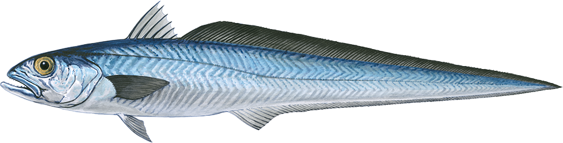

🔬 Diagnostics Lab
⚡ Intervention Lab
🔍 Monitoring Lab

Blue Grenadier (SESSF Fishery)
Live Mode
Zoom In
Zoom Out
Reset View
Reset Filters
View Data Source
Reload Data
Loading data from Google Sheets...